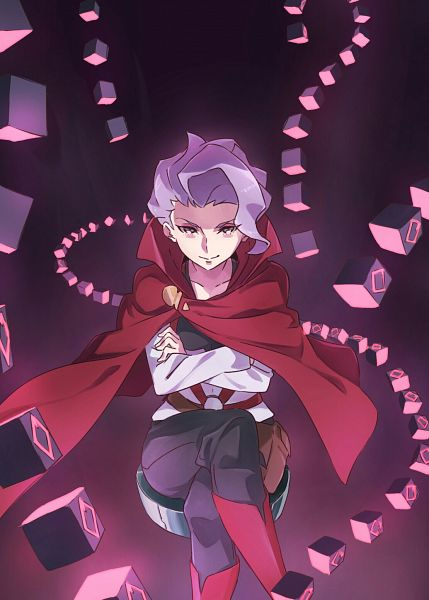

Información General
Croix Meridies es una bruja rival en *Little Witch Academia*. Con su ambición y habilidades mágicas excepcionales, busca demostrar su superioridad en el mundo de la magia. Su enfoque poco convencional y su deseo de romper con las normas la convierten en una figura intrigante.
Características
- Nombre: Croix Meridies
- Edad: Desconocida (aparenta estar en sus 20s)
- Apariencia: Croix tiene el cabello corto y blanco, con un estilo elegante que refleja su personalidad. Sus ojos son de un color púrpura intenso, y a menudo se la ve con una expresión decidida y segura.
- Habilidad mágica: Croix es experta en magia avanzada y transformaciones, utilizando su talento para desafiar a sus oponentes y demostrar su valía en la Academia.
- Personalidad: Croix es ambiciosa, inteligente y, a menudo, arrogante. Su deseo de superación puede llevarla a ser rival de sus compañeros, pero también la motiva a alcanzar grandes logros en la magia.
Estadísticas de Croix
Relaciones
Croix tiene una relación tensa con Akko, a quien considera una rival. A pesar de su rivalidad, ambas están motivadas por su pasión por la magia. Croix también tiene conexiones con otros personajes de la Academia, lo que añade profundidad a su historia.